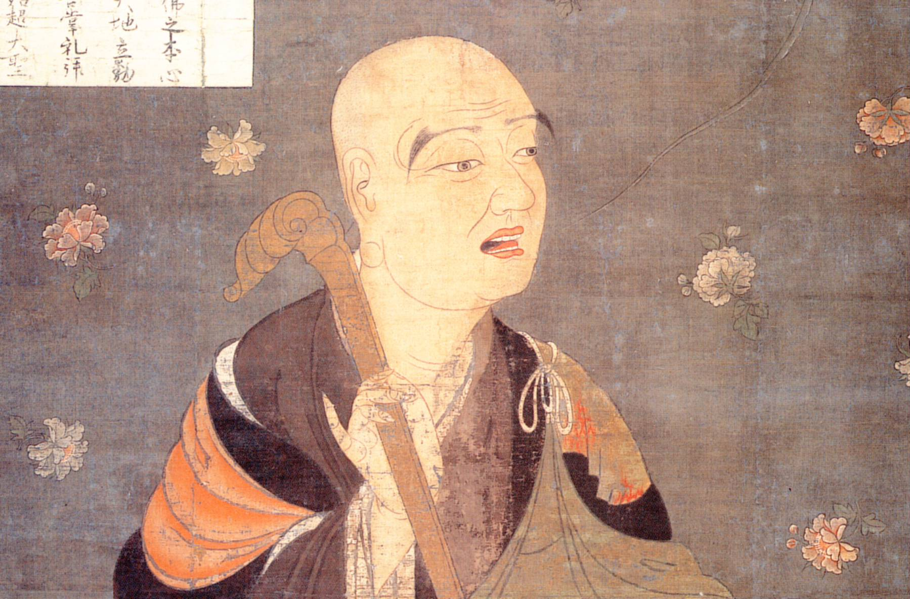

Fazang (法藏, 643–712) is traditionally considered the third patriarch of the Huayan (華嚴) school of Mahayana Buddhism, which developed in China based on the Flower Garland Sutra (Huayan jing 華嚴經). He was a prolific writer, authoring commentaries on major Buddhist texts and original works that elucidated Huayan teachings.
Fazang's genius was pedagogical. He could take the Huayan school's most abstract doctrines and make them concrete through vivid, physical analogies. A building and its rafters. A golden lion statue. These were not mere illustrations but philosophically precise models for understanding how all phenomena relate to each other.
According to the Huayan school, all phenomena lack an essence that defines what they are independently of other things. All distinctions between phenomena are conventional. Any attempt at defining a particular phenomenon involves relating it to other phenomena. Huayan philosophy then understands these relations as mutually constituting: each thing defines every other thing, and every other thing defines it.
This builds on the Buddhist doctrine of emptiness (kong 空). All phenomena are empty of independent self-nature. They exist only through dependent arising: each thing comes into being through a web of conditions. Remove any condition and the thing changes. This is not nihilism (saying nothing exists) but rather a claim about how things exist: relationally, not independently.
The readings present the same core philosophy through two different extended metaphors. "The Rafter Dialogue" (Selection 14) uses a building and its rafters to explore the six characteristics of interpenetration. "Essay on the Golden Lion" (Selection 15) uses a golden lion statue to explain dependent arising, emptiness, and the ten mysteries. Together they give two angles on one vision: that everything interpenetrates everything else.
Translated by David Elstein. The text uses a building (the whole) and a rafter (a part) to explain how parts and wholes relate. The building cannot exist without the rafter; the rafter is only called a "rafter" because it functions within the building. Neither exists independently.
Think of a building. It is composed of rafters, planks, roof tiles, and other materials. Now focus on one rafter. In Huayan philosophy, that single rafter is the building, because without it the building would be different (or not exist). And the building is the rafter, because the rafter only has its identity through its function in the whole. This relationship holds simultaneously for every part.
Fazang repeatedly warns against two errors. Annihilationism denies that phenomena exist at all. Eternalism posits things that exist without causes, independently and permanently. Buddhism charts a "Middle Way" between these: it acknowledges the conditional existence of phenomena while denying that they are uncaused, independent, or eternal.
Fazang describes six characteristics, or six ways of understanding the relationship between part and whole. These are not sequential stages but simultaneous perspectives, "any of which is available at any time, much as we can see a tree as an individual or part of the largest forest at the same time" (p. 81).
"To recap, wholeness is the building; particularity is [building and conditions] not opposing each other. Identity is they are conditions; difference is each condition considered separately. Integration is the result of the various conditions. Disintegration is each maintaining its own character." p. 86; trans. David Elstein
Translated by Bryan W. Van Norden. In 704 CE, Empress Wu Zetian, China's only female emperor and a devoted patron of Buddhism, invited Fazang to the palace to explain Huayan philosophy. When the empress had difficulty understanding, Fazang pointed to a nearby golden lion statue and used it as a metaphor.
The gold of the statue represents the unified, underlying Pattern of relationships (li 理). The appearance of the statue as a lion represents our illusory perception of things as independent individuals. There is really only gold; there is no lion. Yet it is useful to speak as if there were independent, persistent individuals (the gold really does appear to be a lion).
"The gold of the statue is a metaphor for the unified, underlying Pattern of relationships, while the appearance of the statue as a lion is a metaphor for our illusory perception of things as independent individuals. We must recognize that the only thing that ultimately exists is the Pattern of relationships among momentary events." p. 87; trans. Bryan W. Van Norden
In Section 7 of the Golden Lion essay, Fazang introduces one of Huayan Buddhism's most famous images: Indra's Net. The Hindu god Indra has a net with a jewel at every intersection of every two strands. Each jewel is so bright it reflects every other jewel in the net. This becomes a Huayan metaphor for the Pattern: every aspect of existence is connected to, defined by, and reflects every other.
"In every one of the lion's eyes, ears, limbs, and joints, and in each and every hair, there is a golden lion. Moreover, the golden lion in each and every hair simultaneously enters into any one hair. In this manner it is repeated inexhaustibly, like the jewels in Lord Indra's Net." p. 90; trans. Bryan W. Van Norden
This is not an abstract proposition. It is a model of reality. Every event contains every other event. Every part mirrors the whole. The eye of the lion is gold, and the whole lion is nothing but gold, so the eye encompasses all there is to the whole lion.
Both texts insist on avoiding two philosophical errors:
Buddhism charts a middle path: phenomena have conditional existence. They arise through causes and conditions. They are real in the sense that they function, but empty in the sense that they lack fixed, independent self-nature.
"Substance" (ti 體) and "Function" (yong 用) are key technical terms. In the Golden Lion essay: water is Substance, a wave is Function; a lamp is Substance, its light is Function. Gold is Substance, the lion is Function. The Substance never changes; the Function is how it manifests (p. 87).
Justin Tiwald & Bryan W. Van Norden, eds., Readings in Later Chinese Philosophy: Han Dynasty to the 20th Century (Hackett, 2014).
Selection 14: Fazang, "The Rafter Dialogue," pp. 80–86. Trans. David Elstein.
Selection 15: Fazang, "Essay on the Golden Lion," pp. 86–91. Trans. Bryan W. Van Norden.